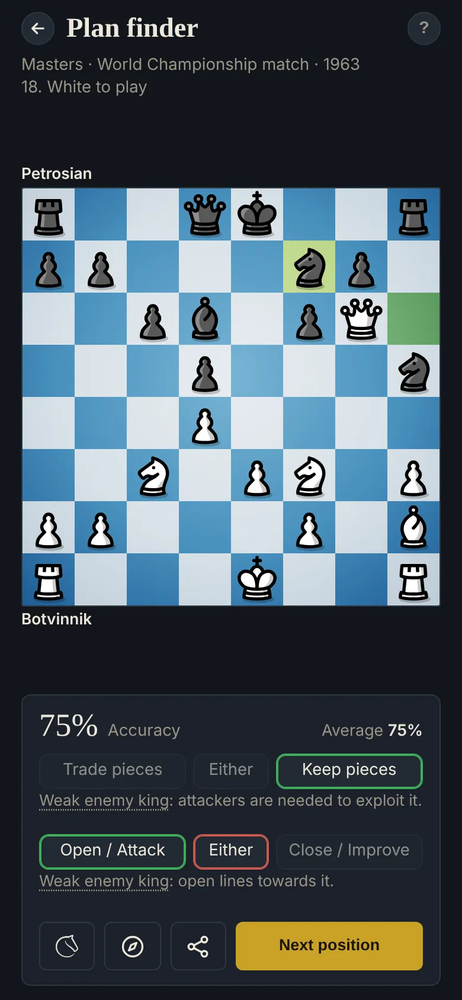

Plan finder
How to find a general plan in chess
"A bad plan is better than no plan at all", as the old saying goes (often credited to Chigorin). A plan gives you a direction to search for good moves, and helps you take better decisions. Four questions, in order, can lead to one.

Four questions
- Anything urgent? Checks, captures and threats, for both sides: something to win, or to defend, like a pawn or the exchange. (Positions where a piece or more is at stake are left out: there, the threat decides the move.)
- Who's better? Weighing the imbalances is a good way to gauge it, and the most decisive ones should shape the core aspects of your plan. Balanced means the engine within half a pawn.
- Trade, or keep pieces? Trades help the side up material, with better pawns, or short of space. Keep pieces with better pieces, more space, or against a weak king.
- Attack, or improve? An edge that fades (active pieces, a development lead, a weak king) calls for opening up and attacking. One that lasts (material, pawns, space) leaves time to improve.
The exercise
Answer the first two questions, check, then the last two. Each answer is a quarter of the score.
The plan follows the imbalances. When they pull both ways, either answer counts.